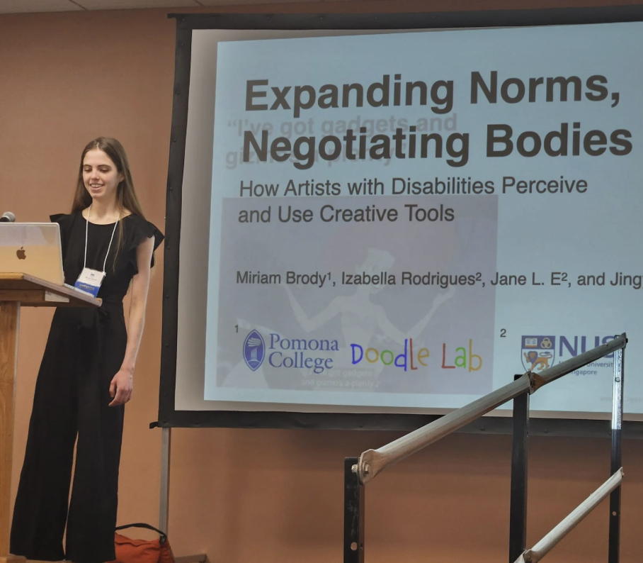

I'm an incoming computer science PhD student at the University of Washington (Paul G. Allen School), where I'll be advised by Professor Jacob Wobbrock.
My work lives at the intersection of Human-Computer Interaction (HCI), accessibility, and creativity support. I want to explore how to support accessible creative confidence for all—from everyday creative acts to artistic expression. I also have a growing focus on inquiring if and how humans and AI systems can collaborate in creative contexts.
Before this, I graduated from Pomona College with a Bachelor of Arts in Computer Science, working under the mentorship of Professor Jingyi Li and Jane L. E. During my undergraduate studies, I also studied as an exchange student at Swarthmore College and Jesus College, Cambridge.
my research interests
My research interests broadly cluster around human-computer interaction and accessibility. Specifically, I want to understand how interactive systems can adapt to layered, shifting human realities rather than forcing users to conform to static hardware design.
Lately, I am fascinated by the shifting boundaries of human-AI collaboration. I want to explore how intelligent systems can act as collaborative partners that honor human intent, shared cognition, and personal expression, rather than just treating the user as an end-recipient of automated outputs.
I also care about creativity support tools—lowering the floor and raising the ceiling for digital physical fabrication interfaces, ensuring tools remain expressive, tactile, and thoroughly open to experimentation.
publications
making
snapshots / moments

